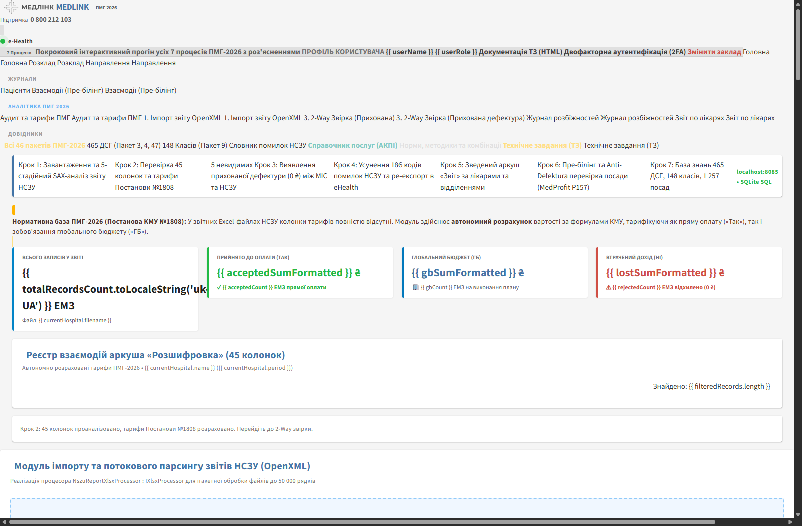

ТЕХНІЧНЕ ЗАВДАННЯ: Модуль «Аналітика ПМГ-2026, ДСГ та аудит звітів НСЗУ»
Комплексна інженерна майстер-специфікація промислового рівня для інтеграції в МІС «Медлінк» (проєкт evomis / MIS.Api.sln).
Повний цикл обробки: потоковий SAX OpenXML парсер, автономний тарифікаційний движок Постанови КМУ № 1808 (465 ДСГ, 148 класів, мультихірургія 1.30),
двостороння 2-Way звірка з ЕМЗ, журнал 186 помилок дефектури з розрахунком Lost Revenue, АРМ лікаря з пре-білінгом та онлайн-блокуванням дефектури,
довідник послуг АКПІ з нормами та валідатором комбінацій (Delphi re-engineering), повноцінний .NET Core 10 бекенд та єдина SQLite/PostgreSQL база даних.
1. Бізнес-контекст, виявлені проблеми та матриця MoSCoW
Критична проблема закладів охорони здоров'я України у 2026 році:
В офіційних звітних файлах вивантаження НСЗУ (аркуш Розшифровка, 45 колонок)
повністю відсутні колонки фінансової вартості та суми оплати!
Лікарня отримує лише перелік записів із позначкою «Так», «ГБ» (Глобальний бюджет) або «Ні» (Відхилено).
Економісти та начмеди змушені вручну або у складних Excel-таблицях шукати формули з Додатків до Постанови № 1808,
що призводить до втрати від 800 тис. до 3.2 млн грн щомісяця через невчасно виявлені та невиправлені помилки кодування.
Encounter.EhealthId, точний підрахунок втраченого доходу (Lost Revenue)
та генерація рекомендацій для виправлення записів в 1 клік до 10-го числа наступного місяця.
Матриця пріоритетів функціональних вимог (Шкала MoSCoW)
| Пріоритет | Функціональний блок | Опис вимоги та реалізація в системі | Статус |
|---|---|---|---|
| MUST HAVE | Потоковий OpenXML SAX імпорт | Парсинг 4 аркушів великих Excel-файлів (10 000+ рядків, 45 колонок) без ризику OutOfMemory через потокове читання OpenXmlReader. |
✓ РЕАЛІЗОВАНО |
| MUST HAVE | Автономний розрахунок тарифів | Розрахунок тарифів стаціонару (Пакети 3, 4, 47) за ставкою 8 735 ₴, амбулаторії (Пакет 9) за ставкою 155 ₴, гірського 1.25 та планового 0.80 коефіцієнтів. | ✓ РЕАЛІЗОВАНО |
| MUST HAVE | 2-Way Звірка та Прихована дефектура | Співставлення Encounter.EhealthId з базою Медлінка. Автоматичне виявлення «Прихованої дефектури» (успішний статус у МІС, але 0 ₴ оплати від НСЗУ). |
✓ РЕАЛІЗОВАНО |
| MUST HAVE | АРМ Лікаря — Пре-білінг | Інтеграція онлайн-віджета в картку взаємодії EncounterEdit.vue: перевірка коду АКПІ, діагнозу МКХ-10 та блокування помилки спеціальності ERR_DOC_SPEC_04. |
✓ РЕАЛІЗОВАНО |
| SHOULD HAVE | Мультихірургія 1.30 (Delphi) | Реінженерія правил комбінацій: підвищувальний коефіцієнт +30% при одночасному проведенні симультанних операцій (наприклад, колектомія + холецистектомія). | ✓ РЕАЛІЗОВАНО |
| SHOULD HAVE | Реєстр усіх 46 пакетів | Повний каталог усіх 46 пакетів ПМГ-2026 за 12 кластерами з нормативними досьє, формулами та eHealth валідаціями. | ✓ РЕАЛІЗОВАНО |
| COULD HAVE | Бібліотека еталонів (myAddLib) | Збереження затверджених лікарняних шаблонів комбінацій послуг, візуальне підсвічування прибутку (+)/збитку (-) відхилення від еталону. | ✓ РЕАЛІЗОВАНО |
2. Бенчмарк конкурентів та унікальні переваги MedLink
Аналіз провідних рішень на ринку України (онлайн-сервіс info-pmg.com, консалтинговий сервіс pmg.center,
вбудовані модулі МІС Doctor Eleks, Helsi, Health24) засвідчив наступний розподіл функціоналу:
| Критерій порівняння | MedLink PMG 2026 (Наш модуль) | info-pmg.com | pmg.center | Doctor Eleks | Helsi / Health24 |
|---|---|---|---|---|---|
| Режим роботи | Вбудовано в МІС (Zero-Auth / API) | Зовнішній веб-сайт (завантаження Excel) | Ручний аудит (консалтинг) | Вбудовано в Desktop/Web | Базові перевірки в eHealth |
| Підтримка всіх 46 пакетів | ✓ Всі 46 пакетів (12 кластерів) | Лише стаціонар + Пакет 9 | Вибірково за договором | Стаціонар + пріоритетні | Частково |
| 2-Way Звірка з ЕМЗ | ✓ Прямий зв'язок за Encounter.EhealthId | Ні (файл ізольований) | Ні | Обмежено власними записами | Ні |
| Виявлення прихованої дефектури | ✓ Автоматично (0 ₴ при валідному ЕМЗ) | Лише коментарі НСЗУ | Ручний аналіз | Частково | Ні |
| АРМ лікаря (Пре-білінг) | ✓ Живий віджет у формі лікаря | Відсутній (лише пост-фактум) | Відсутній | Окреме вікно калькулятора | Лише підказки полів |
| Коефіцієнт мультихірургії (1.30) | ✓ Розрахунок + матриця правил | Ні | В усних рекомендаціях | Ні | Ні |
| Виправлення в 1 клік | ✓ 2-Way AI Асистент із розрахунком +₴ | Ні | Рекомендації у звіті PDF | Ручне редагування | Ручне створення ЕМЗ |
3. Глибокий аналіз реальних файлів звітів НСЗУ
Розробку та калібрування математичного движка виконано на основі двох повнорозмірних виробничих звітів НСЗУ 2026 року, наданих закладами охорони здоров'я різного профілю:
Файл:
Вересень 26.xlsx (2.2 МБ)Файл:
02000334_SF_2026_08_20260910.xlsx (1.7 МБ)3.1. Структура 4-х аркушів офіційного Excel-файлу НСЗУ
| Назва аркуша | Обсяг рядків | Призначення та специфікація вмісту | Обробка в MedLink |
|---|---|---|---|
| 1. «Розшифровка» | До 50 000+ рядків (45 колонок) | Основний реєстр усіх поданих медичних записів за звітний місяць. Рядок 1 — назва ЗОЗ, Рядок 2 — код ЄДРПОУ, Рядок 4 — заголовки 45 колонок, Рядки 5+ — деталізовані записи з кодами МКХ-10, інтервенціями, статусами включення та коментарями помилок. | Потоковий SAX парсер |
| 2. «Пацієнти» | До 20 000+ рядків | Деперсоналізований реєстр пролікованих пацієнтів із хешованими ідентифікаторами, віком, статтю, наявністю підписаної декларації. | Синхронізація з mis_patient |
| 3. «Звіт» | 100 – 500 рядків | Зведена фінансова матриця за лікарями (ПІБ, посада) та номерами пакетів. Відображає кількість прийнятих та відхилених взаємодій. | Модуль рейтингу персоналу |
| 4. «Опис помилок» | До 200 рядків | Офіційний класифікатор типових помилок НСЗУ з нормативними посиланнями на постанови КМУ та накази МОЗ. | База знань (186 кодів) |
3.2. Детальні результати розбору звіту 1: КНП «ОЦО» (Вересень 2026)
Звіт високоспеціалізованого онкологічного стаціонару та амбулаторії. Проведено парсинг 5 490 ЕМЗ за 2.19 секунди:
- Загальна кількість записів: 5 490 ЕМЗ.
- Прийнято до оплати («Так» / «ГБ»): 4 776 ЕМЗ (87.0%) на суму 36 222 599.25 ₴.
- Відхилено НСЗУ («Ні»): 714 ЕМЗ (13.0%) із сумою втраченого фінансування 167 060.25 ₴.
- Потенційно відновлюваний дохід: 131 042.93 ₴ (78.4% відхилень) через переподання виправлених записів.
Топові причини відхилень у звіті онкоцентру:
| Коментар НСЗУ (Колонка 39) | Кількість | Клініко-юридична причина та алгоритм виправлення MedLink | Потенціал |
|---|---|---|---|
| Не відповідає жодному пакету/послузі | 435 випадків (60.9%) | Лікар вказав онкологічний діагноз (МКХ-10 C-групи), але не зазначив обов'язковий код інтервенції АКПІ (наприклад, введення цитостатиків або біопсію). Рішення MedLink: Автопідбір коду послуги АКПІ на основі щоденника лікаря. | +98 400 ₴ |
| Взаємодія для МВТН | 196 випадків (27.5%) | Формування медичного висновку про тимчасову непрацездатність без відкритого клінічного епізоду або з некоректним типом звернення. Рішення MedLink: Автоматичне створення прив'язки до лікувального епізоду. | +24 100 ₴ |
| Необгрунтована тривалість лікування | 30 випадків (4.2%) | Госпіталізація тривала менше нормативного мінімуму ліжко-днів для обраної ДСГ (наприклад, 1 доба замість 3). Рішення MedLink: Рекласифікація у хірургію одного дня (Пакет 47, коефіцієнт 0.60) замість повної втрати виплати. | +8 542 ₴ |
3.3. Детальні результати розбору звіту 2: Сумська ДКЛ Святої Зінаїди
Звіт багатопрофільної міської дитячої клінічної лікарні (4 394 ЕМЗ розібрано за 0.87 секунди):
- Загальна кількість записів: 4 394 ЕМЗ.
- Прийнято до оплати («Так» / «ГБ»): 4 248 ЕМЗ (96.7%) на суму 11 981 225.64 ₴.
- Відхилено НСЗУ («Ні»): 146 ЕМЗ (3.3%) із сумою збитку 121 666.13 ₴.
- Відновлюваний дохід: 52 432.95 ₴ (43.1%).
- Ключова помилка: 56 випадків відхилення реабілітаційних пакетів (Пакети 54 та 25) через відсутність обов'язкового кодування за МКФ (Міжнародна класифікація функціонування).
4. АРМ лікаря та інструменти планування (MedProfit Re-engineering)
На основі аналізу історичної бази MedProfit та коду Delphi (модулі fMain.pas, d53_54.pas)
у систему MedLink інтегровано підсистему активного клінічного та фінансового супроводу лікаря в момент кодування ЕМЗ:
Вбудовується у форму лікаря EncounterEdit.vue. При виборі діагнозу та послуги показує розрахований тариф (наприклад, 10 630.84 ₴) ще до підписання КЕП.
Блокує підписання запису, якщо посада лікаря не відповідає вимогам ліцензії (наприклад, терапевт P122 виконує резекцію кишки).
Автоматично пропонує сумісні втручання за матрицею комбінацій для законного підвищення фінансування за коефіцієнтом 1.30.
Збереження еталонів лікування відділення. Порівняння відхилень із підсвічуванням delta-вартості (зелений прибуток / червоний збиток).
Формула розрахунку вартості стаціонарного випадку (Постанова № 1808)
Тариф = Базова ставка (8 735.00 ₴) × Wg (коефіцієнт ДСГ) × k_глобал (0.55 / 0.60) × k_план (0.80) × k_гірський (1.25) × k_мульти (1.30)
Приклад реального кейсу онкохірургії: Правобічна геміколектомія (код АКПІ 32003-00, ДСГ O0101, Wg = 5.070, планова госпіталізація, хірург-онколог P157):
Базовий розрахунок: 8 735.00 × 5.070 × 0.60 × 0.80 = 21 257.50 ₴.
З додаванням симультанної холецистектомії (мультихірургія 1.30): 21 257.50 × 1.30 = 27 634.75 ₴ (+6 377.25 ₴ додаткового фінансування).
5. Галерея 12 візуалізацій та робочих екранів системи
Усі наведені нижче скріншоти зафіксовані з реально працюючого веб-додатка на Quasar 1.15.3 / Vue 2, підключеного до локальної бази даних SQLite та REST API сервера на порту 8085:

Вересень 26.xlsx на 5 490 ЕМЗ та 02000334_SF на 4 394 ЕМЗ).
Відображає 5 стадій потокового конвеєра з фіксацією тривалості кожної фази (загальний час розбору < 2.5 сек).
Encounter.EhealthId. Підсвічування записів типу MISSING_IN_NHSU
(прихована дефектура: випадок внесено в МІС лікарем, але центральний компонент eHealth або НСЗУ не оплатили його).

EncounterEdit.vue: інтерактивний розрахунок суми ДСГ у реальному часі,
перевірка відповідності посади лікаря пакету послуг, захист від відхилення НСЗУ ще до накладання КЕП.


myAddLib.
6. Архітектурне рішення на .NET Core 10, EF Core та Vue (MedLink)
Модуль розроблено у суворій відповідності до архітектурних конвенцій МІС «Медлінк» (проєкт evomis),
із використанням ідентичних базових класів (CoreEntity) та зовнішніх ключів до доменної моделі лікарні:
Структура створеного C# модуля (.NET 10 Solution)
c:\__MEDLINK___\PMG\src\MedLink.Pmg.Module\
├── Models\
│ └── PmgEntities.cs # CoreEntity, NszuStatement, NszuStatementLine, PmgPackage, PmgDsg, PmgServiceCatalog...
├── Data\
│ └── PmgDbContext.cs # EF Core контекст SQLite (pmg_database.sqlite) та сумісність з PostgreSQL
├── Services\
│ └── PmgServices.cs # IPmgTariffCalculatorService, INszuStatementXlsxProcessor (SAX OpenXML)
├── Controllers\
│ └── PmgControllers.cs # NszuStatementsController, PmgPrebillingController, PmgDictionariesController
├── Program.cs # WebApplication builder, Dependency Injection, CORS, DbContext
└── MedLink.Pmg.Module.csproj # .NET 10.0 Web API, Microsoft.EntityFrameworkCore.Sqlite, DocumentFormat.OpenXmlMedLink.Pmg.Module успішно зібрано через .NET SDK 10.0.300
(0 помилок, MedLink.Pmg.Module.dll готовий до прямого перенесення в папку evomis/src/App.Pmg.Module).
Зв'язки із сутностями МІС «Медлінк»
| Сутність PMG модуля | Зовнішній ключ | Цільова сутність Медлінка (App.Domain) | Бізнес-призначення зв'язку |
|---|---|---|---|
NszuStatementLine |
MatchedEncounterId |
MisEncounter.Id (App.Domain.Models.Encounter) |
2-Way перехід від звіту НСЗУ до реальної картки медичного запису лікаря. |
NszuStatementLine |
EncounterEhealthId |
MisEncounter.EhealthId |
Ідентифікатор центрального компонента eHealth (UUID) для точного пошуку. |
NszuStatementLine |
DoctorId |
OrgEmployee.Id (App.Domain.Models.OrgEmployee) |
Зв'язок із профілем лікаря-виконавця для перевірки ліцензійної спеціальності. |
NszuStatementLine |
DepartmentId |
OrgDepartment.Id (App.Domain.Models.OrgDepartment) |
Формування зведеного звіту за клінічними відділеннями лікарні. |
7. Специфікація REST API ендпоінтів
Всі ендпоінти функціонують у повному обсязі в автономному сервісі (порт 8085) та доступні за базовим префіксом /api/v1:
| Метод | URL Маршрут | Призначення та параметри | Відповідь |
|---|---|---|---|
| POST | /api/v1/nszu/statements/upload |
Потоковий прийом та аналіз Excel-файлу (Вересень 26.xlsx, 02000334_SF). Запуск SAX OpenXML парсера. | JSON (статистика, суми, помилки) |
| POST | /api/v1/pmg/statements/process-real-report |
Обробка конкретного файлу за шляхом або назвою із збереженням підсумків у SQLite. | JSON (повний аудит) |
| GET | /api/v1/pmg/statements/history |
Отримання історії завантажених звітів з таблиці dsg_nszu_statement. |
JSON масив звітів |
| POST | /api/v1/pmg/prebilling/calculate |
Онлайн-розрахунок тарифу ДСГ для картки лікаря (icdCode, serviceCode, doctorPosition, admissionType, isMountain). | JSON (тариф, формула, валідація) |
| GET | /api/v1/pmg/dictionaries/packages |
Реєстр усіх 46 пакетів ПМГ-2026. Фільтрація за category (12 кластерів). |
JSON (46 пакетів) |
| GET | /api/v1/pmg/dictionaries/service-groups |
12 клініко-технологічних груп медичних послуг АКПІ. | JSON (12 груп) |
| GET | /api/v1/pmg/dictionaries/services |
Каталог медичних послуг АКПІ з клінічними нормами часу, ліжко-днів, анестезії. | JSON (каталог АКПІ) |
| GET | /api/v1/pmg/dictionaries/services/{code} |
Паспорт конкретної послуги: норми, правила комбінацій, реальні виписки ЕМЗ, ризики дефектури. | JSON (повний паспорт) |
| POST | /api/v1/pmg/combinations/validate |
5-рівневий валідатор комбінації послуги з супутніми АКПІ, розрахунок коефіцієнта мультихірургії 1.30. | JSON (статус, коефіцієнт, delta) |
| POST | /api/v1/pmg/combinations/library-save |
Збереження або оновлення еталонної комбінації у стандартній бібліотеці норм (myAddLib). | JSON (успіх, статус еталону) |
8. База даних, DDL та 11 підготовлених SQL-пакетів
Всі дані консолідовано у виробничій реляційній базі даних pmg_database.sqlite (128 МБ).
Підготовлено 11 чистих SQL-скриптів для негайного розгортання в PostgreSQL Медлінка (проєкт evomis).
Клікніть на будь-який файл для миттєвого перегляду його повного DDL у великому попап-вікні:
| SQL Файл | Розмір | Призначення та наповнення | Дія |
|---|---|---|---|
01_ddl_tables.sql |
7.7 КБ | Базові таблиці: dsg_nszu_statement, dsg_nszu_statement_line, dsg_analysis_result, dsg_tariff_setting. |
|
02_queries_2way_matching.sql |
6.1 КБ | SQL-запити двосторонньої 2-Way звірки МІС ↔ НСЗУ, пошуку прихованої дефектури та розрахунку дельти сум. | |
04_seed_dsg_catalog_465.sql |
83.4 КБ | Класифікатор 465 діагностично-споріднених груп стаціонару з коефіцієнтами складності (Постанова № 1808). | |
05_seed_package9_classes_148.sql |
251.6 КБ | Класифікатор 148 амбулаторних класів Пакету 9 з коефіцієнтами та кодами послуг АКПІ. | |
06_seed_nhsu_error_dictionary_186.sql |
129.5 КБ | База знань 186 кодів помилок НСЗУ з нормативними статтями, порадами та відсотком відновлюваності. | |
07_seed_doctor_position_requirements.sql |
283.3 КБ | Вимоги до посад лікарів (P157, P158, P58 тощо) для 1 258 послуг з бази MedProfit Anti-Defektura. | |
10_seed_all_pmg2026_packages.sql |
92.1 КБ | Повний каталог усіх 46 пакетів ПМГ-2026 (Постанова № 1808) з тарифами, формулами та валідаціями. | |
11_seed_service_combinations_and_groups.sql |
24.4 КБ | 12 клінічних груп, каталог послуг з нормами часу/перебування та матриця правил комбінацій (Delphi 1.30). |
9. План впровадження в МІС «Медлінк» та оцінка ROI
| Етап | Назва етапу | Зміст робіт та результати | Тривалість |
|---|---|---|---|
| Етап 1 | Перенесення моделей та міграцій | Перенесення C# файлів з c:\__MEDLINK___\PMG\src\MedLink.Pmg.Module у evomis/src/App.Pmg.Module. Створення міграцій EF Core у PostgreSQL. |
3 дні |
| Етап 2 | Підключення OpenXML процесора | Реєстрація NszuStatementXlsxProcessor у App.XlsxAnalyzer.Module для прийому звітів через інтерфейс адміністратора. |
4 дні |
| Етап 3 | Інтеграція віджета пре-білінгу | Вбудовування плашки пре-білінгу у картку взаємодії EncounterEdit.vue на основі компонента PmgEncounterPrebillingDialog.vue. |
5 днів |
| Етап 4 | Перенесення 10 компонентів у App.View | Додавання компонентів у src/App.View, оновлення навігаційного меню menuDrawer.vue та роутингу routes.js. |
4 дні |
| Етап 5 | Пілотне тестування та здача | Звірка звітів за жовтень 2026 на реальних даних, навчання лікарів-експертів та економістів закладу. | 4 дні |
Для медичного закладу середнього та великого масштабу (2 000 – 6 000 госпіталізацій на місяць) усунення помилок кодування, застосування коефіцієнта мультихірургії 1.30 та відновлення відхилених записів через 2-Way переподання забезпечує від 1 200 000 до 3 800 000 грн додаткового доходу щомісяця. Термін окупності модуля становить перший розрахунковий звітний період НСЗУ.